15th June 2001
Poppy is a TV star! Meridian filmed her and Sharon today for a piece which should be shown next Friday at 6 o'clock. Watch out for it! She continues to be stable and is digesting her milk well, which she is now having more frequently. The tube from the ventilator going into her lungs moved slightly yesterday and there was a little concern because her right lung wasn't expanding fully but it has been moved and she is now breathing properly again.
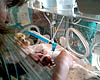
14th June 2001
Poppy has had a long line successfully inserted which means she can have one of the splints removed from her arm. The line will be used to feed her and administer drugs. She is still being fed 1ml of milk every 2 hours.
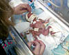
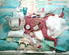
13th June 2001
Poppy had her blood transfusion last night. She has been given some milk and has digested it well so she will continue to be fed a small amount at 2 hourly intervals. She is also now receiving caffeine to stimulate her brain so that she will remember to breathe when they take her off the ventilator. This should happen within the next week which is very exciting! The doctors are very pleased with her progress so far.
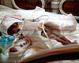
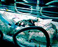
12th June 2001
Poppy's condition is stable. Tonight she is going to have a blood transfusion to prevent anaemia. This is because she cannot produce enough blood to cope with the loss due to blood tests. She is also being given bicarbonate of soda because her blood is too acidic. This is not uncommon in premature babies. Also tonight she will be given some of Sharon's milk to see if she is able to digest it. If she can they will continue to feed it to her, if she cannot cope with it they will try again in 24hrs. See what Aeryn thinks of all this.
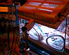
11th June 2001
Poppy has recovered from
her dip last night and is almost on normal oxygen levels again. Some fluid
in her breathing tube was responsible for her increased oxygen requirements. Tomorrow they will start
to try and give her some milk.
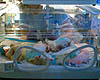
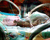
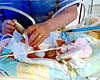
10th June 2001
Poppy started the day well
but has taken a bit of drop this evening. Her oxygen level has been increased
and she may have to be given another dose of surfactant to help her lungs.
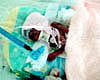
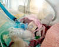
9th June 2001
Poppy is in a stable condition
and is doing better than expected. She is breathing 21% oxygen - normal
air.
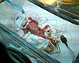
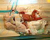
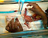